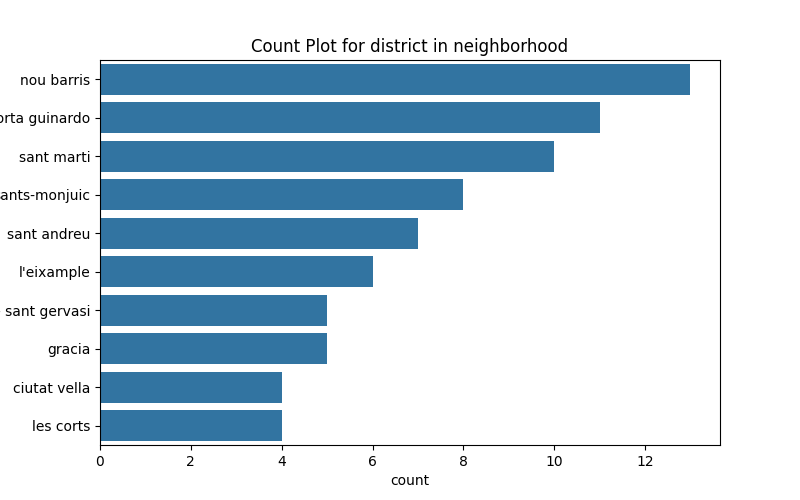

Basic Statistics for neighborhood
|
district |
neighborhood |
| count |
73 |
73 |
| unique |
10 |
73 |
| top |
nou barris |
el bon pastor |
| freq |
13 |
1 |
Missing Value Count for neighborhood
|
Missing Count |
| district |
0 |
| neighborhood |
0 |
Sum of Numeric Columns for neighborhood
Variance of Numeric Columns for neighborhood
Feature: district
Missing Count: 0
Value Counts for district
|
Count |
| district |
|
| nou barris |
13 |
| horta guinardo |
11 |
| sant marti |
10 |
| sants-monjuic |
8 |
| sant andreu |
7 |
| l'eixample |
6 |
| sarria - sant gervasi |
5 |
| gracia |
5 |
| ciutat vella |
4 |
| les corts |
4 |
Feature: neighborhood
Missing Count: 0
Value Counts for neighborhood
|
Count |
| neighborhood |
|
| el bon pastor |
1 |
| el turó de la peira |
1 |
| porta |
1 |
| sarrià |
1 |
| sant gervasi - la bonanova |
1 |
| el raval |
1 |
| sant andreu |
1 |
| la vila olímpica del poblenou |
1 |
| el coll |
1 |
| vilapicina i la torre llobeta |
1 |
| la vall d'hebron |
1 |
| la bordeta |
1 |
| la salut |
1 |
| les tres torres |
1 |
| pedralbes |
1 |
| la verneda i la pau |
1 |
| l'antiga esquerra de l'eixample |
1 |
| la font de la guatlla |
1 |
| el camp de l'arpa del clot |
1 |
| vallbona |
1 |
| la trinitat vella |
1 |
| el congrés i els indians |
1 |
| canyelles |
1 |
| montbau |
1 |
| la marina de port |
1 |
| sants - badal |
1 |
| hostafrancs |
1 |
| el barri gòtic |
1 |
| el besòs i el maresme |
1 |
| la trinitat nova |
1 |
| la clota |
1 |
| la nova esquerra de l'eixample |
1 |
| vallvidrera, el tibidabo i les planes |
1 |
| sant gervasi - galvany |
1 |
| sant martí de provençals |
1 |
| les roquetes |
1 |
| sants |
1 |
| la sagrera |
1 |
| el fort pienc |
1 |
| ciutat meridiana |
1 |
| la dreta de l'eixample |
1 |
| el baix guinardó |
1 |
| diagonal mar i el front marítim del poblenou |
1 |
| la vila de gràcia |
1 |
| el clot |
1 |
| torre baró |
1 |
| el putxet i el farró |
1 |
| la teixonera |
1 |
| el carmel |
1 |
| el poble sec |
1 |
| el poblenou |
1 |
| can peguera |
1 |
| provençals del poblenou |
1 |
| la sagrada família |
1 |
| el guinardó |
1 |
| sant pere, santa caterina i la ribera |
1 |
| el parc i la llacuna del poblenou |
1 |
| la marina del prat vermell |
1 |
| baró de viver |
1 |
| la prosperitat |
1 |
| horta |
1 |
| la maternitat i sant ramon |
1 |
| vallcarca i els penitents |
1 |
| sant antoni |
1 |
| can baró |
1 |
| verdun |
1 |
| les corts |
1 |
| el camp d'en grassot i gràcia nova |
1 |
| navas |
1 |
| la guineueta |
1 |
| la font d'en fargues |
1 |
| la barceloneta |
1 |
| sant genís dels agudells |
1 |
Too many unique values to plot for neighborhood